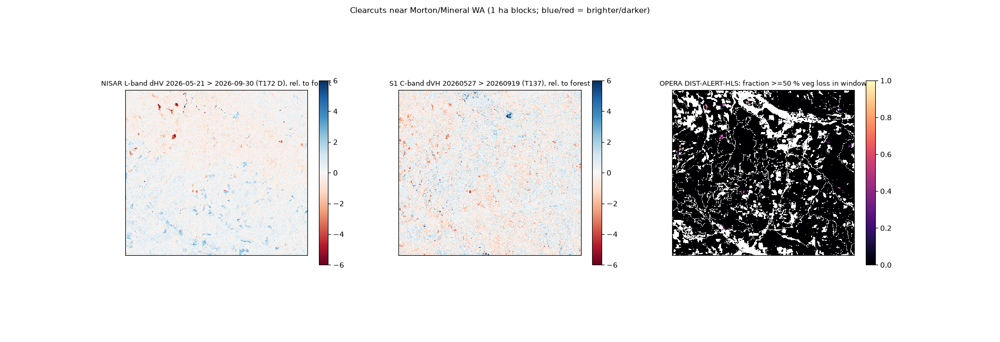
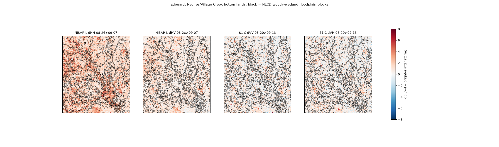

REAL DATA · NISAR GCOV + Sentinel-1 (OPERA RTC-S1), processed today
Two radars, one map: three real tests
Same method on both satellites: same box, 1-hectare blocks, change measured relative to unchanged surroundings, checked against an independent reference (optical satellite alerts, the official fire perimeter, river gauges). Each satellite wins somewhere, and the app says which.
Clearcuts in Washington timberland (Morton / Mineral)
NISAR wins
NISAR May 21 → Sep 30, 2026 (track 172) · Sentinel-1 May 27 → Sep 19 · reference: NASA OPERA optical disturbance alerts (DIST-ALERT-HLS) · 68,364 forest blocks, 106 reference clearcuts

| NISAR (L) | Sentinel-1 (C) |
|---|
| Flags that are real clearcuts (precision) | 35.7% | 4.6% |
| Real clearcuts found (recall) | 52.8% | 50.9% |
| Hits with the same number of flags (157) | 56 | 23 |
| Precision at a stricter −4 dB cutoff | 53.9% | 12.5% |
Both find about half the clearcuts, but Sentinel-1 buries them in false alarms: 1,186 flags to NISAR's 157. NISAR's long waves see trunks and branches disappear, so cut blocks come out compact and dark.
Caveat: the optical reference isn't ground truth; 36 reference blocks were missed by both (likely thinning or partial cuts).
Tropical Storm Edouard: flooded forest, Village Creek, TX
Only NISAR was there
NISAR Aug 26 → Sep 7, 2026 (track 12): 4 days after the crest, gauge still at 14.8 ft · Sentinel-1's nearest passes were Sep 1 (before) and Sep 13 (after the water receded to 5.6 ft)

| Floodplain forest blocks brightening ≥ 3 dB | |
|---|
| NISAR HH (double bounce) | 5.7% vs 2.6% upland |
| NISAR HV | 0.3% |
| Sentinel-1 VV / VH | 0.17% / 0.13% |
A +3 to +6 dB HH ribbon runs along the creek corridors (left panel), with HV flat. That's the textbook signature of water under trees: water and trunks reflect the radar back like a corner mirror.
Caveat: moderate evidence. Sentinel-1 never imaged the flood, so this is partly a timing win, and there's no inundation ground truth yet.
Kaiser Canyon Fire, Colville Reservation, WA
Sentinel-1 wins
NISAR Jul 13 → Sep 11 · Sentinel-1 Jul 11 → Sep 9 · reference: official NIFC perimeter (138,285 acres)
| Blocks inside the fire dropping ≥ 2 dB | |
|---|
| NISAR HV | 4.7% (0.05% outside) |
| Sentinel-1 VH | 40.6% (5.2% outside) |
A grass and shrub fire. C-band's short waves catch the loss of low vegetation; NISAR only reacts in the forested pockets. The app says so instead of hiding it.
App mockup
Kaiser Canyon detail